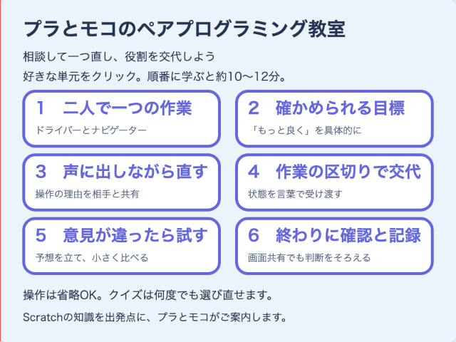

プラとモコのエディター教室
プラとモコのペアプログラミング教室
一つのScratch作品を二人で直します。「星あつめ」に出る星を5個から6個に変えながら、相談、役割交代、動作確認の進め方を学びます。
1. 二人で一つの作業
操作する人をドライバー、行き先と見落としを確かめる人をナビゲーターと呼びます。ドライバーは次にすることを言葉にします。ナビゲーターは「どこを変えるとそれが起きる？」「どう確かめる？」と問いかけます。二人で判断し、途中で役割を交代します。
たとえば「星を増やす」と決めたら、片方がスプライト「ペア練習」を開き、もう片方がGキーから始まるかたまりを目で追います。
2. 確かめられる目標
「星をもっと出す」を「Gキーを一度押すと、星が6個出る」に置き換えます。変更前にGキーを押して今は5個出ると確かめ、何を変えたら終わりかを二人で言葉にします。音や見た目の案は別にメモすると、今の作業に集中できます。
3. 声に出しながら直す
ドライバーは「『星を並べる』の最初の値を5から6にするよ」と伝え、ナビゲーターは「二つ目の間隔は60のまま」と確認します。操作後にGを一度押し、星が出るたびに数えます。見た目が変わったら、二人で気づいたことを話します。
4. 作業の区切りで交代
試運転が終わったところで役割を交換します。先ほどのドライバーが、何を変えたか、どう確かめたか、次に調べたいことを伝えます。
個数を6にした。Gを一度押して6個出た。次は、星が重なる場合に間隔を調べたい。
途中で交代する場合も「どこまで分かったか」を共有します。時間で交代するなら、先に二人で合図を決めます。
5. 意見が違ったら試す
「最初の位置を左に寄せる」と「星の間隔を狭める」に意見が分かれたときは、各案で何が起こると予想するかを言います。同じ状態から片方ずつ試し、数、重なり、画面の端に収まるかを比べます。案を試すたびに元の値に戻すと、どの変更で違いが出たか分かります。
6. 終わりに確認と記録
最後に二人で作品を動かし、何を変え、どう確かめたかを短く残します。次にやりたいことは別の行に書きます。離れた場所で画面共有する場合は、見ている版とスプライト名をそろえ、操作する人を交代するたびに引き継ぎます。
紙芝居を開く
- Plus Editorで「ファイル」→「SB3ファイルを開く…」を選びます。
- 実行画面を引出しに表示し、緑の旗を押します。目次から好きな単元をクリックします。
- 会話を先へ進めたいときは、ステージにフォーカスを戻してSpaceを押します。クイズには選択肢を押して答えます。

一人でも視聴できます。2単元ではステージの外側に表示されるGuideが、検索欄のクリックまたはコードの変更を待ちます。値が正しいかは自分でGキーを押して確かめます。
二人で試す練習
紙芝居を練習用として開き、二人で一つの画面を見ます。スプライト「ペア練習」を選ぶと、Gキーで「星を並べる」を呼ぶかたまりがあります。
- Gキーを一度押し、星が出るたびに数えます。初期値は5個です。次に試す前に星が消えるのを待ちます。
- 最初のドライバーは「個数を6にする」と言って最初の数値を変えます。相手は二つ目の数値が60のままであることを確認します。
- ステージの余白をクリックしてGキーを押し、6個出るか確かめます。星が順に出て消えるので、出現の回数を数えます。
- 「何を変えた・何を確かめた・次は何を調べる」を伝えて交代します。
- 新しいドライバーは、間隔だけを60から50にして比較します。結果を見てどちらを使うか相談し、変更と確認結果を書きます。